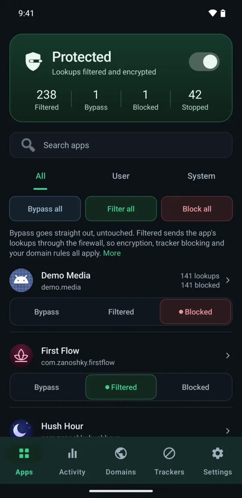
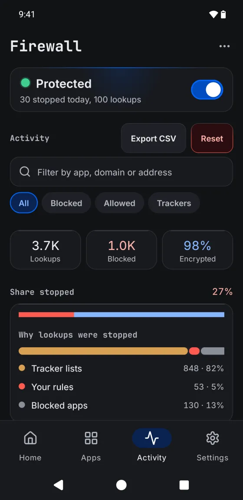
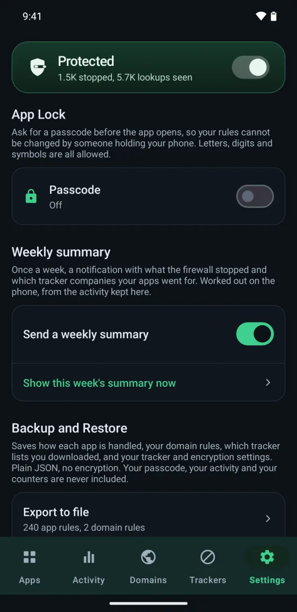
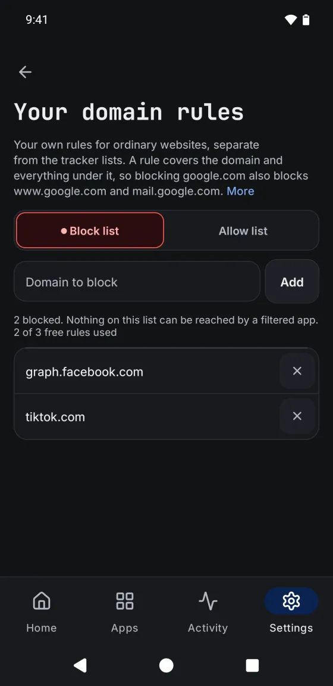
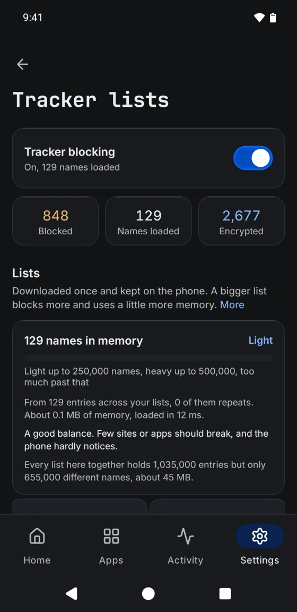

User guide
Firewall
A firewall for Android that needs no root, with tracker blocking, DNS over HTTPS, and a log of everything your phone looks up. You decide, app by app, what the firewall does with it. Free, with an optional Pro and an optional Insider plan.





New in 1.100
- Kill switch: when another VPN app takes the VPN slot, your Blocked apps stay cut off and Firewall tells you with a notice and a line on Home.
- The widget and Self check no longer take the VPN slot from another VPN app. Firewall only takes the slot when you turn it on.
- Another VPN app knocks Firewall off? Android lets any VPN app you once allowed take the slot without asking. In Android Settings, VPN, turn on Always on VPN for the one you want to keep.
New in 1.98
- Self check, in Settings under Help: Firewall looks at its own setup and says in plain words what could stop it from working. In No VPN mode it says which parts of Firewall that mode does not use.
- The widget draws a ring of how many of today's lookups were stopped, is four cells wide, and the Quick Settings tile says Protected, Watch only, Not filtering or Off under its name. Settings has an Add to Quick Settings row.
- A downloaded tracker list that is two weeks old or more now says it is older than it should be.
- Automation can turn the firewall on again from Tasker.
New in 1.91
- A Setup guide in Settings that checks each step on the phone as you read, and a Pro tour that does the same for the Pro features.
- Pro: the DNS Inspector, DNS guard, DNS through Tor with its own setup page, and a weekly refresh of your downloaded lists.
- Insider: Insights joins No VPN mode, Open doors and Automation.
- Activity shows a privacy score, charts and the countries your apps reach.
- You can block one domain for one app only, and add the widget from Settings.
- Safer: a blocked app cannot reuse a name, payments are checked again, and Tor lookups refuse a port held by an app that is not Orbot or Tor Browser.
New in 1.77
- No VPN mode moved from Pro to Insider too (1.78). Pro owners no longer have it; if Insider ends while it is on, No VPN mode and the firewall switch off, and you turn the firewall on again from Home.
- Automation and Open doors moved from Pro to Insider. Pro owners no longer have them; Insider now gives Automation, Open doors, No VPN mode, new features first, an Insider mark in About and your requests read first.
New in 1.55
- Insider, the optional monthly plan, brings new features first, reads your reports first and adds a mark in About (since 1.77 it also gives Automation and Open doors, and since 1.78 No VPN mode).
- Firewall says when it is not filtering: Home, the notification and the widget read Not filtering while Private DNS sends lookups past it, and a notice tells you when Android stopped it.
- Domain rules take names in any script, and every place that adds a rule counts toward the 3 free ones.
- Another app, such as Netglow, our network scanner, can ask Firewall to block an app. Firewall asks you first.
- Block lists use far less memory, long DNS answers work again, and Greek, Cyrillic, Vietnamese and more letters show in the app's own fonts.